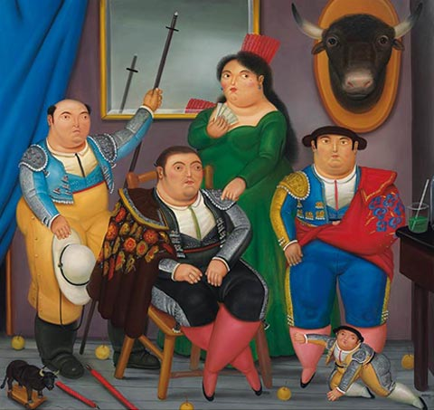

FERNANDO BOTERO
Bienvenidos, vamos a conocer un poco sobre el artista colombiano Fernando Botero
Y
¿Dónde encontrar obras de Botero en Colombia?
Fernando Botero Angulo es un pintor, dibujante y escultor colombiano, nacido en Medellín el 19 de abril de 1932. Botero es uno de los artistas plásticos más reconocidos de Colombia en los últimos decenios. Su vastísima obra, en la actualidad plenamente consolidada, su deliberada aversión por el arte contemporáneo y su amplio conocimiento de la historia de la pintura clásica hacen de Botero un artista excepcional en el país y el resto de América Latina.
¿Qué es el boterismo?
Es un estilo figurativo deribado de las expresiones artisticas del artista colombiano Fernando Botero
Cuando nos situamos frente a un cuadro, en cualquier museo, sala de exposiciones o en otros lugares, a veces, sólo a veces, identificamos el estilo del pintor y podemos asegurar la autoría de la obra. Pocos artistas han llegado a conseguir un estilo propio, personal e inconfundible: uno de estos artistas, de renombre internacional e inconfundible estilo es el artista colombiano Fernando Botero, posee un estilo muy particular en sus obras denominado por algunos como Boterismo.


Mujer delante de una ventana, 1990
Una afirmación muy frecuente por parte de Botero es: "Yo no pinto gordos/as", dado que es uno de los principales comentarios que recibe por sus voluptuosas obras. El artista menciona:" mis esculturas no tienen ningún significado simbólico. Sólo me intereso por las formas, por las superficies suaves y redondas que subrayan la sensualidad de mi obra.""
Momentos imprescindibles de la carrera del pintor colombiano
-
 La familia
La familia
Perdió a su padre cuando tenía 4 años. Su madre, una matriarca antioqueña de oficio costurera y su tío, levantaron a tres hijos -

La vocación
El tío visionó para Fernando una carrera en la tauromaquia, pero al ver el maestro los toros fieros, mejor resolvió ser pintor. -
 Las migraciones
Las migraciones
Salió de Medellín hacia Bogotá para hacer su primera exposición. Las críticas lo hicieron trisas en su momento y se aisló del mundo por unos meses en el pueblo de Tolú.
Tags
FernandoBotero Botero Bogota photography museofernandobotero museo museobotero arte artist art Colombia travelphotography
Subscribe
Enter your e-mail below and get notified on the latest blog posts.